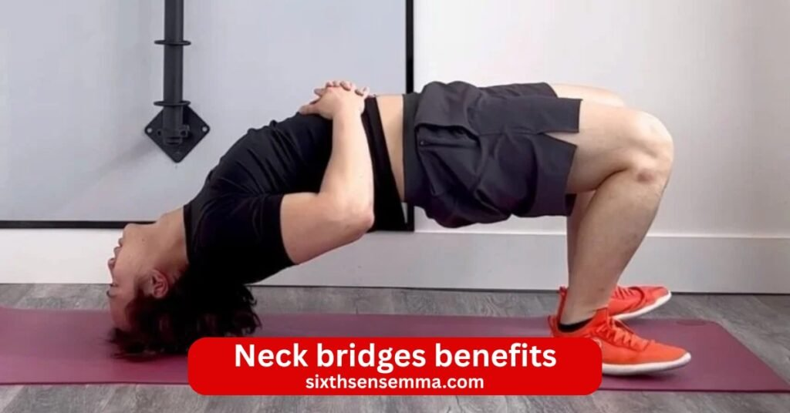
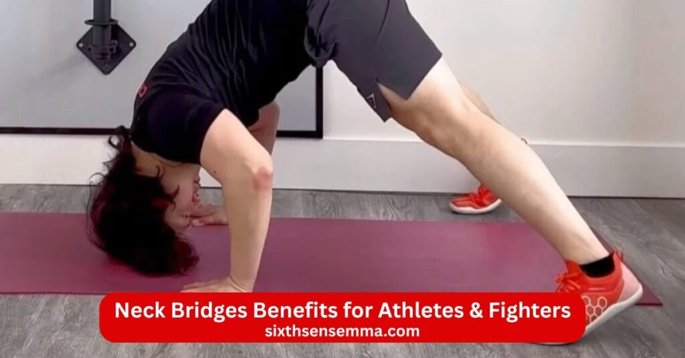
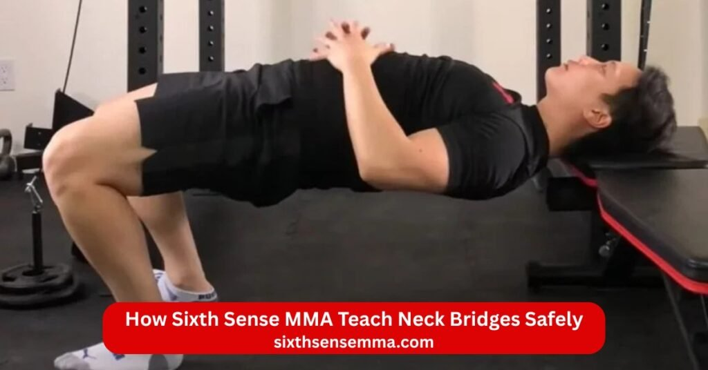

Neck bridges benefits Complete Guide for Safe Neck Training by Sixth Sense MMA

Neck Bridges Benefits offer one of the most direct and powerful ways to develop a strong neck improve neck stability and protect yourself in sports daily life or recovery. Whether you are a fighter looking to handle takedowns and strikes better an athlete wanting to reduce injury risk or someone dealing with forward head posture from long desk hours neck bridge exercises deliver real lasting changes when done correctly.At Sixth Sense MMA in Coppell Texas we have made neck training a core part of our programs because a well conditioned neck changes everything for martial artists and everyday trainees alike. A strong neck absorbs impact supports better posture helps prevent concussions in contact sports and even improves performance in grapples clinches and explosive movements.
What Is Neck Bridge Exercise?
The neck bridge stands as a classic bodyweight drill that places most of your weight on the top or front of your head while your hips lift high to form an arched shape. You rest on your head and feet or toes often with hands near the floor for balance at first. This neck exercise forces the neck muscles to work hard through isometric tension as you hold the bridge position or add gentle rocks and rolls. The movement targets the full circle of neck muscles including front back and sides of the neck while engaging the upper back and core for support. Fighters value it because it mimics real pressures in grapples or impacts without needing equipment like a neck harness. Start on a soft mat to cushion the head and avoid strain on the cervical spine. Focus on slow control to feel the neck engage fully and build neck strength safely.
Types of Neck Bridges (Front Back Wrestling Style)
Neck bridge variations allow you to target different parts of the neck and body through specific setups.The front bridge begins from a position on your back with knees bent and feet flat near your hips. Push your hips upward so your weight shifts onto the crown or forehead of your head and your toes. Hands often start beside your head or on your hips for support then you can remove them for more challenge. This version emphasizes neck flexion and strengthens the front neck muscles while stretching the back.
Who Should Learn Neck Bridges with a Trainer?
Anyone new to neck training or dealing with neck issues should start neck bridges under a trainer’s guidance. Beginners risk poor form that compresses the cervical area or strains muscles if they rush into full holds. A trainer checks your alignment teaches proper breathing and ensures you avoid forcing the bridge position. People with past neck injuries neck problems or limited mobility need extra caution and often medical approval first. Those in combat sports like wrestling Muay Thai or MMA gain the most from coached sessions because trainers show progressions that match fighting demands. Overweight individuals or those with weak core stability also benefit from supervision to prevent overload. A good coach starts with easier isometric presses against a wall or hands then builds to full bridges. This approach lets you train your neck safely gradually increase intensity and sidestep common mistakes that cause pain.
Neck Bridges Benefits for Overall Body
Benefits of neck bridges extend well past the neck alone creating ripple effects that improve daily function and athletic output.
Neck Muscle Strength & Endurance
Neck bridges directly challenge the neck muscles with sustained isometric load and controlled motion. Holding the position or rocking builds neck strength across all angles leading to thicker more durable neck muscles. Do neck bridges build muscle? Absolutely especially as you add reps longer holds or progressively increase difficulty. Fighters develop endurance that helps them maintain position during long grapples or absorb repeated strikes. Neck bridges strengthen the area for real world toughness turning a weak neck into a strong neck over consistent practice.
Cervical Spine Stability Improvement
One major advantage lies in enhanced neck stability. The exercise strengthens deep stabilizers around the cervical spine which supports the head and neck under load. Better strength and stability means the cervical region resists unwanted shifts or compressions during impacts. In MMA neck training or Muay Thai neck exercises this added control keeps you balanced in clinches or exchanges reducing vulnerability to twists.
Posture Correction & Alignment
Daily habits often lead to forward head posture which strains the neck and upper back. Neck bridges help by activating muscles that pull the head back and align the spine naturally. Regular sessions improve posture through stronger rear neck muscles and better awareness of neutral positioning. You carry yourself taller with less forward tilt easing tension and supporting overall spinal health.
Injury Prevention in Sports
Neck injury prevention emerges as a top reason athletes include neck bridges. A fortified neck acts as a shock absorber in contact sports cutting the force that reaches the brain or spine during hits or falls. Neck bridges for fighters lower risks of strains whiplash or concussions by building a buffer zone. In wrestling neck bridges or clinch battles this resilience keeps you safer and more durable.
Improved Upper Body Performance
A solid neck connects directly to better function higher up. It stabilizes the upper back and shoulders improving power transfer in throws punches or lifts. Neck bridges target these links so martial artists notice sharper control and stronger output. The exercise boosts coordination between core back and neck leading to smoother more explosive movements across the board.

Neck Bridges Benefits for Athletes & Fighters
Athletes in high contact or combat disciplines rely on neck training to stay competitive and reduce downtime from strain. Neck bridges deliver targeted load that strengthens the entire neck structure improving reaction control and durability under pressure.
Wrestling & Grappling Performance
In wrestling and grappling the neck often bears extreme stress during takedown defense escapes bridging out of pins or resisting chokes. Wrestling neck bridges directly mimic these demands by training the neck muscles to hold and explode from arched positions. Regular practice builds explosive power for bridge escapes and better resistance against neck cranks or guillotines. Neck bridges for fighters in BJJ or submission grappling create a stronger neck that maintains posture during long rolls reduces fatigue in scrambles and improves overall control on the mat. The isometric holds and dynamic rocks develop endurance so grapplers stay composed even when opponents apply heavy pressure. Fighters notice they recover faster between rounds and handle chain wrestling with greater confidence because of this added neck stability and strength.
Boxing & Martial Arts Safety
Boxing Muay Thai kickboxing and other striking arts expose the neck to whiplash from punches kicks and clinch work. Muay Thai neck exercises like neck bridges condition the area to absorb rotational forces and linear impacts better. A fortified neck reduces the snap back effect from hooks or uppercuts lowering concussion risk and keeping fighters upright longer. In clinch range where knees and elbows target the head and neck a strong neck helps maintain balance and counter effectively. Neck bridges strengthen the stabilizers that keep the cervical spine aligned during exchanges so fighters experience less dizziness or disorientation after clean shots. Consistent neck bridge workouts build the kind of resilience seen in legends who took heavy punishment yet stayed sharp round after round.
Gymnasts & Calisthenics Users
Gymnasts and calisthenics athletes perform inverted positions handstands planches and dynamic flips that place significant load on the neck and upper back. Neck bridges prepare the neck for these demands by strengthening extension flexion and lateral control needed in bridges maltese holds or tumbling. The exercise improves neck flexibility benefits alongside power allowing smoother transitions into and out of hand balances. Calisthenics users who train muscle ups human flags or front levers find that a conditioned neck supports better shoulder and core engagement without compensatory strain. Regular neck strengthening drills reduce the chance of tweaks during high volume sessions and help maintain clean lines in advanced skills where poor neck positioning leads to collapse or injury.
Contact Sports Injury Protection
Rugby American football hockey lacrosse and other contact sports involve frequent collisions tackles and checks that jar the neck. Neck injury prevention becomes a priority and neck bridges serve as one of the most direct ways to build a protective buffer. The exercise thickens neck muscles increases neck stability and improves the ability to brace against sudden forces. Athletes develop the capacity to “tuck the chin” and resist helmet to helmet or shoulder impacts more effectively. Neck bridges aren’t just preventive they help athletes return to play stronger after minor strains because the tissue adapts to progressive load. Teams that incorporate neck bridge variations report fewer neck related absences as the strong neck distributes force away from vulnerable cervical structures and the brain.
Neck Bridges Benefits for Rehabilitation
Beyond performance neck bridges offer practical support in recovery settings when applied carefully under guidance. The controlled progressive nature makes them useful for rebuilding function after setbacks or addressing chronic issues.
Neck Pain Recovery Programs
Chronic or acute neck pain from poor mechanics old injuries or overuse often stems from weak neck stabilizers and poor endurance. In structured recovery programs modified neck bridge variations starting with wall presses short isometric holds or partial ranges help reactivate and strengthen the neck muscles without aggravating symptoms. Gradual progression rebuilds neck strength while improving blood flow to healing tissues. Patients work on posture correction as they learn to hold neutral alignment under light load. Many programs pair neck bridges with mobility drills to restore full range and reduce guarding patterns that perpetuate pain cycles. Over weeks consistent work leads to less daily stiffness and better tolerance for normal activities.
Desk Job & Tech Neck Solutions
Prolonged sitting and screen time create forward head posture and “tech neck ” where the neck stays craned forward straining muscles and the cervical spine. Neck bridges counter this by activating the opposing extensors and deep stabilizers that pull the head back into balance. Short daily sessions of back bridge holds or gentle rocks retrain awareness of proper posture and improve posture long term. The exercise combats the forward slump that leads to headaches shoulder tension and upper trap tightness common in office workers. People notice reduced fatigue at the end of the workday and less need to constantly adjust their position because the neck and upper back gain natural support from stronger musculature.
Physical Therapy Support Exercises
Physical therapists frequently include neck bridges or scaled versions in rehab plans for whiplash cervical disc issues or post surgical recovery when cleared by a doctor. The bodyweight nature allows precise control over intensity no heavy plates or machines required. Therapists use neck bridge variations to target specific weaknesses such as poor extension after flexion dominant injuries or lateral imbalances from one sided strain. Isometric neck holds build tolerance before dynamic movement while gradually increase the intensity matches healing stages. Patients gain confidence as they feel the neck become more capable which supports adherence to home programs. Combined with manual therapy and other modalities neck bridges accelerate return to normal function by restoring strength and stability in a functional sport like pattern.
Risks of Neck Bridges Without Professional Guidance
Jumping straight into advanced neck bridge work on your own often leads to issues because the exercise places heavy axial compression and shear forces directly through the head and neck. Without someone to check alignment breathing and progression small errors build up over time. Beginners or those with limited neck awareness frequently overload the area ignore pain signals or skip foundational steps like isometric wall presses. This lack of guidance increases the chance of acute tweaks or gradual wear that shows up later as persistent discomfort or restricted movement. Train your neck safely requires awareness of limits and solo attempts miss that critical feedback loop.
Common Injuries from Wrong Technique
Doing neck bridges the wrong way frequently causes strains sprains and overuse problems in the supporting tissues. Improper setup like bridging directly onto the crown instead of distributing weight through the upper back and traps creates uneven pressure that irritates facet joints in the cervical area. Muscle strains hit the neck muscles and upper back when form breaks during rocks or holds leading to sharp pain tightness or spasms that limit daily turning or lifting. Over arching or collapsing the bridge position adds shear stress resulting in ligament sprains or inflammation that feels like constant soreness.
Cervical Disc & Nerve Damage
The biggest concern with unsupervised neck bridges involves stress on the cervical discs and nearby nerves. Supporting full body weight through the head compresses the intervertebral discs especially in the lower cervical segments like C5 C6 and C6 C7 where wear happens most. Poor form or excessive duration pushes discs together unnaturally accelerating degeneration bulging or even herniation over repeated sessions. Once irritated cervical discs can press on nerve roots causing radiating pain numbness tingling down the arms or weakness in the hands classic signs of nerve compression.
Why Supervised Training Is Important
Working with a qualified trainer or coach changes everything by prioritizing safety from the start. Professionals assess your current neck strength mobility and any history of neck issues before introducing even basic versions. They teach precise setup correct head placement neutral spine controlled breathing to minimize compression and shear. Supervision allows safe scaling: starting with easier neck strengthening drills like isometric holds against resistance then progressing to partial bridges only when ready.
Sixth Sense MMA Professional Neck Training Services
At Sixth Sense MMA located at 817 S MacArthur Blvd #100 Coppell TX 75019 our approach to neck training focuses on smart individualized work that delivers results while keeping safety first. We integrate neck bridges and complementary drills into programs tailored for martial artists fighters and everyday trainees who want a strong neck without unnecessary risks. Our coaches draw from real combat experience and rehab principles to guide every step.
Personalized Neck Strength Programs
We create custom plans based on your goals experience level and any existing concerns. Whether you aim to boost grappling endurance improve striking absorption or simply build daily resilience your program starts with an assessment of neck mobility strength and posture. From there we layer in progressive neck bridge workouts neck extensions isometric variations and other neck strengthening drills at the right pace. Programs include tracking progress so you see measurable improvements in neck stability and power. This personalized method ensures you strengthen the neck muscles effectively without generic routines that ignore individual needs.
One on One Coaching for Safe Training
Private sessions provide hands on guidance where coaches watch every rep closely. They adjust your bridge position cue breathing and prevent common errors that lead to strain. One on one coaching builds confidence through clear feedback and modifications scaling back if form slips or advancing when you’re solid. This direct supervision lets you push limits safely especially during dynamic wrestler’s bridge work or added challenges.
Athlete Specific Neck Conditioning Plans
For competitors in MMA Muay Thai BJJ wrestling or other disciplines we design plans that match sport demands. These include neck bridges for fighters focused on impact resistance clinch control and escape power. We incorporate Muay Thai neck exercises anti whiplash drills and recovery strategies to handle training volume. Plans address position specific needs like heavy bridging for grapplers or rotational stability for strikers while tying into full body conditioning for better overall performance.
Physiotherapy Based Neck Rehab
When dealing with past neck pain minor strains or recovery needs our physiotherapy informed approach uses gentle progressions rooted in rehab principles. We start with low load isometric neck work mobility drills and controlled neck bridge variations to rebuild without aggravation. Coaches collaborate on safe loading posture correction and tissue recovery techniques to address neck issues effectively. This method supports return to full training or daily function with reduced risk of setbacks.

How Sixth Sense MMA Teach Neck Bridges Safely
Our method at Sixth Sense MMA treats neck bridges as a skill that requires precision patience and constant attention to detail. Every session follows a clear system designed to protect the cervical spine build genuine neck strength and prepare fighters for the mat or ring.
Step by Step Assessment Process
We begin every new student with a thorough neck evaluation before any bridge work starts. The coach first asks about your training history past neck injuries daily habits and any current neck pain or stiffness. Next comes a hands on check: we test active and passive range of motion in all directions flexion extension lateral flexion and rotation while watching for pain clicking or asymmetry. We assess posture in standing and seated positions to spot forward head posture or rounded shoulders that could affect load distribution.
Beginner to Advanced Progression
Beginners start far from full neck bridges: wall isometric neck holds for 10 20 seconds per direction build tolerance without compression. Next step adds floor based isometric bridges with hands supporting most of the body weight keeping the head lightly touching the mat. Partial back bridge or front bridge follows with hips barely lifted and short holds of 5 10 seconds. Once form stays perfect for multiple sets we introduce gentle rocks in the bridge position to add dynamic control. Intermediate levels bring longer holds smoother transitions and wrestler’s bridge rocks with controlled momentum.
Mobility & Warm Up Protocols
No neck bridge session starts cold at Sixth Sense MMA. We open with 8 12 minutes of targeted mobility and activation to prepare the neck upper back and shoulders. Gentle dynamic stretches include controlled neck circles side to side tilts chin tucks with retraction and shoulder rolls to free up tight spots. We add light neck extensions using a towel for resistance cat cow flows on all fours to warm the spinal chain and thoracic rotations to improve overall posture. Activation drills follow: isometric presses in neutral then against a wall or hand in multiple angles to wake up deep stabilizers.
Injury Free Training System
Our entire system revolves around keeping neck bridges safe from day one. Coaches enforce strict form cues neutral cervical spine alignment even weight distribution through the head relaxed jaw steady breathing and no excessive arching or collapsing. We cap hold times and reps based on your assessment never pushing through discomfort. Recovery gets built in: sessions include cool down stretches foam rolling for the neck and upper back and advice on daily habits like screen posture or sleep positioning. If any warning sign appears sharp pain dizziness numbness or fatigue we stop immediately reassess and often shift to rehab focused alternatives.
Why Choose Sixth Sense MMA for Neck Training Services?
Fighters and everyday trainees pick Sixth Sense MMA because we combine martial arts experience with a serious focus on safe effective neck training that delivers measurable results.
Certified Trainers & Physiotherapists
Our team includes certified martial arts coaches with competition backgrounds in BJJ Muay Thai and MMA plus professionals trained in physiotherapy principles for rehab and conditioning. This mix means every neck drill gets taught with both fighting context and anatomical accuracy. Trainers understand how neck strength translates to real performance like resisting takedowns or eating strikes while spotting risks that purely sport based coaches might miss.
Customized Training Plans
No cookie cutter programs here. We build plans around your sport goals schedule and body. A grappler gets more emphasis on dynamic wrestling neck bridges and escape power; a striker focuses on anti whiplash and rotational stability. Plans adjust for age recovery needs or past neck issues blending neck bridges neck extensions harness work when appropriate and complementary exercises for balanced development.
Proven Results for Athletes
Students consistently report stronger necks that hold up better in training and competition. Grapplers escape pins more easily strikers absorb cleaner shots with less shake and overall fighters feel more confident under pressure. Many see posture improvements that reduce daily tension and support heavier lifts or longer rolls. Our track record comes from years of guiding local competitors who stay healthier and perform sharper because of dedicated neck conditioning.
Safe & Scientific Approach
We base everything on practical experience backed by biomechanics and rehab knowledge no guesswork or outdated myths. Progress gets tracked with simple tests form videos when helpful and ongoing feedback. Safety remains non negotiable: we scale back or modify instantly if needed. This scientific yet fighter friendly method lets you gain all the benefits of neck bridges stronger neck better stability injury resistance while minimizing downsides.
Contact US
Ready to build a stronger neck improve your grappling escapes absorb strikes better correct forward head posture or recover safely from neck issues? Sixth Sense MMA offers professional neck training services tailored to your needs whether you are a beginner competitive fighter or someone wanting long term neck strength and health.
- 817 S MacArthur Blvd #100 Coppell TX 75019 United States
- (469) 972 7800
- info@sixthsensemma.com
Conclusion
Neck Bridges Benefits stand out as a timeless effective way to develop a strong neck boost neck stability and protect the cervical spine in both high impact sports and everyday life. When performed correctly and progressively neck bridge exercises deliver powerful gains: thicker neck muscles better endurance improved posture reduced risk of neck injuries and enhanced performance in wrestling grappling Muay Thai MMA boxing gymnastics calisthenics and other contact sports. From fighters who escape pins more easily and absorb strikes with less shake to desk workers who finally break free from tech neck stiffness and headaches the advantages are clear and practical.
Follow Us on Social Media
Stay connected with Sixth Sense MMA through our social media channels. Follow us for class updates, training tips, and a closer look at our self defense community.
FAQ’s
Yes, neck bridges can be beneficial when done correctly. They strengthen the neck, upper back, and spine muscles, improve posture, and enhance overall neck stability. However, improper form or overtraining can lead to injury, so beginners should practice carefully.
Doing neck bridges every day can increase neck and upper back strength over time, but it may also cause strain or injury if overdone. It’s generally recommended to include rest days and gradually increase intensity.
For beginners, holding a neck bridge for 5–10 seconds is safe. As strength improves, you can gradually increase to 20–30 seconds or more. Always listen to your body and avoid pain.
No, neck bridges do not target belly fat. Fat loss requires overall calorie burning through cardio, strength training, and a balanced diet. Bridges primarily strengthen muscles, not burn fat locally.
Neck bridges and squats serve different purposes. Squats are a lower-body exercise that builds leg strength and burns calories, while neck bridges target neck, upper back, and core stability. They are complementary rather than directly comparable.
Mike Tyson used neck bridges to strengthen his neck and jaw muscles, reducing the risk of knockout and improving overall resilience in boxing. Strong neck muscles help absorb punches and prevent injury.
Signs of weak neck muscles include poor posture, frequent neck pain, headaches, reduced stability, and difficulty supporting the head during physical activity. Strengthening exercises like bridges can help.
Mike Tyson credited neck bridges as a key part of his training, saying they helped him develop a strong neck and jaw to withstand punches and enhance overall boxing performance.
Neck bridges primarily work the neck muscles (sternocleidomastoid, trapezius), upper back, spine stabilizers, and core muscles. They also engage the glutes and legs slightly for support.
Light neck exercises can be done daily if performed carefully and with proper form. More intense exercises like neck bridges should include rest days to avoid strain or injury.
Train with us in Coppell
The first class is free. Shorts, a t-shirt and a water bottle. We lend the rest.
Book a free class